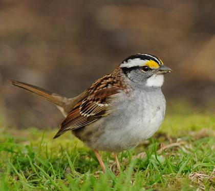
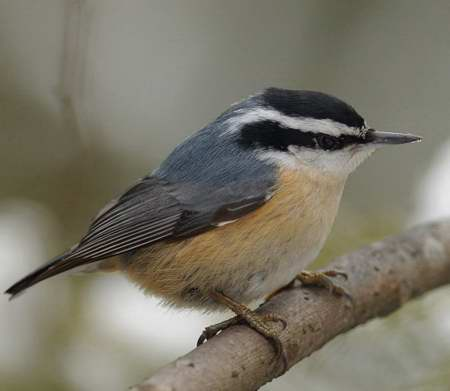

Aller au quiz
Bécassine de Wilson

Bernache du Canada

Bruant à couronne blanche

Bruant à gorge blanche

Buse à épaulettes

Cardinal rouge (femelle)

Dindon sauvage

Épervier de Cooper

Étourneau sansonnet

Grand corbeau

Grand-duc d'Amérique

Hirondelle bicolore

Hirondelle à front blanc

Junco ardoisé

Mésange à tête noire

Moqueur chat

Moqueur polyglotte

Pic mineur

Roselin familier

Sittelle à poitrine blanche

Sittelle à poitrine rousse

Tarin des pins

Tourterelle triste